- Valor total: R$ 60.000
- Pesos: Intel = 41,67%, ATP = 58,33%
\[E[R_p] = 0,4167\times 0{,}18 + 0,5833\times 0{,}25 = 22,1\%\]
De onde vem a taxa de desconto que usamos para avaliar um investimento arriscado?
Um portfólio (ou carteira) é uma combinação específica de títulos e valores mobiliários.
Descrevemos um portfólio por seus pesos: a fração do investimento em cada ativo.
\[ x_{i}=\dfrac{\text{Valor do investimento }i}{\text{Valor total do portfólio}} \]
Hipótese: os pesos resumem toda a informação relevante.
Normalmente os pesos somam 1:
\[ x_{1}+x_{2}+\ldots+x_{n}=1 \]
O retorno do portfólio é a média ponderada dos retornos:
\[ R_{p}=\sum_{i=1}^{n}x_{i}R_{i} \]
R$ 100.000 investidos em três ações: 200 ações de A, 1.000 de B, 750 de C.
| Ativo | Quantidade | Preço | Investimento | Peso |
|---|---|---|---|---|
| Ação A | 200 | R$ 50 | R$ 10.000 | 10% |
| Ação B | 1.000 | R$ 60 | R$ 60.000 | 60% |
| Ação C | 750 | R$ 40 | R$ 30.000 | 30% |
| Total | R$ 100.000 | 100% |
Mesmo portfólio, mas com apenas R$ 50.000 de recursos próprios: toma-se R$ 50.000 emprestado (posição vendida no ativo livre de risco).
| Ativo | Investimento | Peso |
|---|---|---|
| Ação A | R$ 10.000 | 20% |
| Ação B | R$ 60.000 | 120% |
| Ação C | R$ 30.000 | 60% |
| Título livre de risco | −R$ 50.000 | −100% |
| Total | R$ 50.000 | 100% |
Peso negativo = posição vendida (tomar emprestado).
Casa de R$ 500.000, pagando 20% à vista e financiando os 80% restantes.
| Ativo | Investimento | Peso |
|---|---|---|
| Casa | R$ 500.000 | 500% |
| Financiamento | −R$ 400.000 | −400% |
| Total | R$ 100.000 | 100% |
O que acontece com o retorno do seu portfólio se o preço da casa cai 15%?
100 ações de A (comprado) e 200 ações de B (vendido a descoberto).
| Ativo | Quantidade | Preço | Investimento |
|---|---|---|---|
| Ação A | 100 | R$ 50 | R$ 5.000 |
| Ação B | −200 | −R$ 25 | −R$ 5.000 |
| Total | R$ 0 |
Portfólio de valor líquido zero: pesos em % não fazem sentido (denominador zero) — usamos valores em R$.
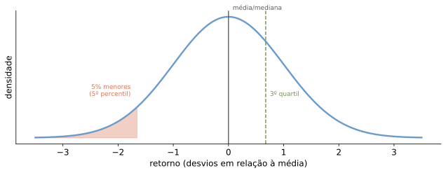
Distribuição normal padrão, ilustrativa — não são dados de um ativo real.
O retorno esperado de um portfólio é a média ponderada dos retornos esperados:
\[ E\left[R_{p}\right]=\sum_{i}x_{i}E\left[R_{i}\right] \]
Note a linearidade.
Problema. Seu portfólio consiste em R$ 25.000 em ações da Intel e R$ 35.000 em ações da ATP Oil and Gas. O retorno esperado é 18% para a Intel e 25% para a ATP. Qual o retorno esperado da carteira?
\[E[R_p] = 0,4167\times 0{,}18 + 0,5833\times 0{,}25 = 22,1\%\]
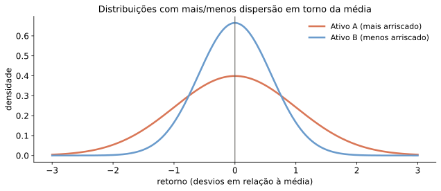
A distribuição mais dispersa produz resultados extremos com maior probabilidade.
O produto esperado dos desvios de dois retornos em relação às suas médias:
\[ Cov\left(R_{i},R_{j}\right)=E\left[\left(R_{i}-E(R_{i})\right)\left(R_{j}-E(R_{j})\right)\right] \]
Estimativa a partir de dados históricos:
\[ Cov\left(R_{i},R_{j}\right)=\dfrac{1}{T-1}\sum_{t}\left(R_{i,t}-\overline{R}_{i}\right)\left(R_{j,t}-\overline{R}_{j}\right) \]
Mede o risco comum entre duas ações, independente das suas volatilidades:
\[ Corr\left(R_{i},R_{j}\right)=\dfrac{Cov\left(R_{i},R_{j}\right)}{SD\left(R_{i}\right)SD\left(R_{j}\right)} \]
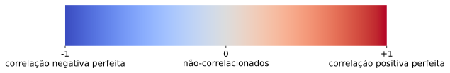
Para \(n\geq2\) ativos, a variância é a covariância média ponderada de cada par:
\[ Var\left(R_{p}\right)=\sum_{i}\sum_{j}x_{i}x_{j}Cov\left(R_{i},R_{j}\right) \]
Com \(x_i = 1/n\) para todos os ativos:
\[ Var\left(R_{p}\right)=\frac{1}{n}\times\text{Média das Variâncias}+\frac{n-1}{n}\times\text{Média das Covariâncias} \]
\[ \underset{n\to\infty}{\approx}\ \text{Média das Covariâncias} \]
Para portfólios com muitas ações e pesos iguais, o risco é determinado pela média das covariâncias.
Desvio-padrão médio das ações: 10% a.m.; correlação média: 0,40. Investindo o mesmo montante em cada ação, qual a variância do portfólio quando \(n\to\infty\)? E se a correlação fosse 0? E 1?
\[Cov\left(R_i,R_j\right) = 0{,}40\times0{,}10\times0{,}10 = 0,004\]
\[\sigma_p \underset{n\to\infty}{\approx} \sqrt{0,004} = 6,3\%\]
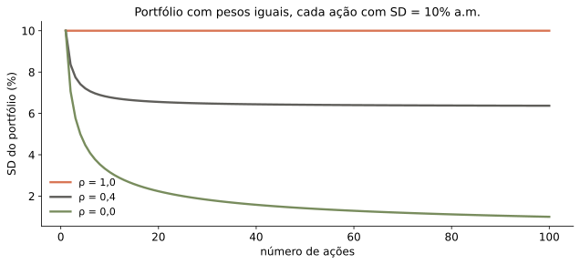
Quando \(n\to\infty\), o benefício da diversificação alcança um limite:
Usando a bilinearidade, a volatilidade de uma carteira com pesos arbitrários é:
\[ SD\left(R_{p}\right)=\sum_{i=1}^{n}x_{i}\times SD\left(R_{i}\right)\times Corr\left(R_{i},R_{p}\right) \]
A menos que todos os pares tenham correlação perfeita (\(+1\)):
\[ SD\left(R_{p}\right) < \sum_{i=1}^{n}x_{i}\times SD\left(R_{i}\right) \]
Suponha que os investidores se importem apenas com o retorno esperado e a variância (ou desvio-padrão) de suas carteiras:
Vamos construir um método para carteiras ótimas.
Ações da Intel e da Coca-Cola, com correlação 0 entre os retornos:
| Ação | Retorno esperado | Volatilidade |
|---|---|---|
| Intel | 26% | 50% |
| Coca-Cola | 6% | 25% |
| x (Intel) | x (Coca-Cola) | E[Rp] | SD[Rp] |
|---|---|---|---|
| 1 | 0 | 26,0% | 50,0% |
| 0.8 | 0.2 | 22,0% | 40,3% |
| 0.6 | 0.4 | 18,0% | 31,6% |
| 0.4 | 0.6 | 14,0% | 25,0% |
| 0.2 | 0.8 | 10,0% | 22,4% |
| 0 | 1 | 6,0% | 25,0% |
100% em Coca-Cola: \(E[R_p]=6,0\%\), \(SD=25,0\%\). Com 20% Intel / 80% Coca-Cola: \(E[R_p]=10,0\%\) (maior) e \(SD=22,4\%\) (menor).
Logo, investir 100% em Coca-Cola é ineficiente.
A correlação não afeta o retorno esperado, mas muda bastante a volatilidade da carteira.
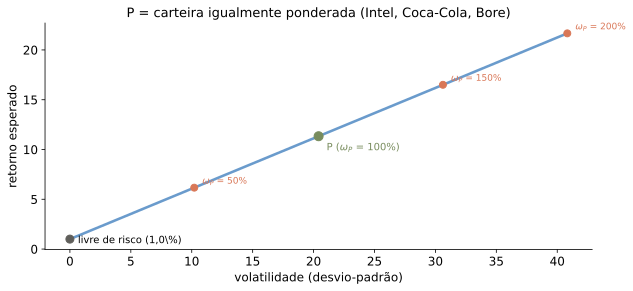
Pesos fora do intervalo \([0,1]\) estendem a fronteira além dos dois ativos.
Considere acrescentar a Bore Industries ao portfólio anterior:
| Ação | Retorno esperado | Volatilidade | Corr. c/ Intel | Corr. c/ Coca-Cola |
|---|---|---|---|---|
| Intel | 26% | 50% | 1,0 | 0,0 |
| Coca-Cola | 6% | 25% | 0,0 | 1,0 |
| Bore Industries | 2% | 25% | 0,0 | 0,0 |
Embora a Bore tenha retorno menor e a mesma volatilidade que a Coca-Cola, ainda pode ser vantajoso incluí-la, pelo benefício de diversificação.
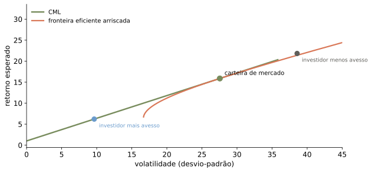
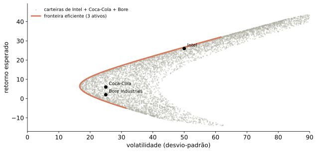
Com venda a descoberto permitida, nenhuma ação isolada está na fronteira eficiente.
Cada ativo adicional, se não perfeitamente correlacionado com os demais, amplia as possibilidades de diversificação.
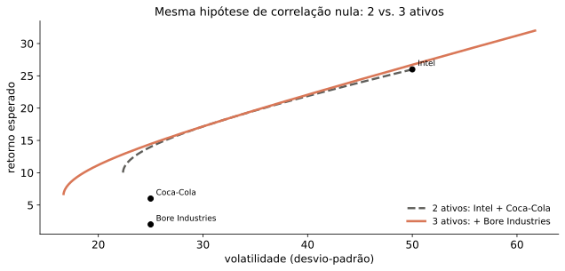
Construção ilustrativa: comparamos a fronteira do nosso próprio exemplo com 2 vs. 3 ativos — não é a figura do livro-texto (que ilustra o mesmo ponto com 10 ações reais).
Seja \(x\) a fração aplicada num portfólio arriscado \(P\):
\[ E\left(R_{x,p}\right)=r_{f}+x\left[E\left(R_{p}\right)-r_{f}\right] \]
\[ SD\left(R_{x,p}\right)=x\cdot SD\left(R_{p}\right) \]
O desvio-padrão é apenas uma fração da volatilidade da carteira arriscada.
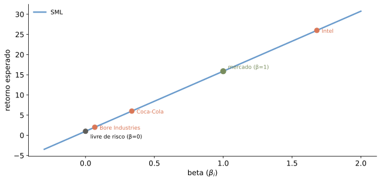
\(P\) é um portfólio arriscado qualquer — ainda não necessariamente o melhor. \(r_f\) aqui é um valor ilustrativo (1% a.a.), não um dado do material-fonte.
Para o maior retorno esperado possível em cada nível de risco, buscamos a carteira que gera a reta mais íngreme ao combinar com o ativo livre de risco.
Índice de Sharpe: mede o retorno por unidade de risco.
\[ Sharpe = \dfrac{E\left[R_{P}\right]-r_{f}}{SD\left(R_{P}\right)} \]
A carteira tangente é a de maior índice de Sharpe possível: onde a reta com o ativo livre de risco tangencia a fronteira eficiente.
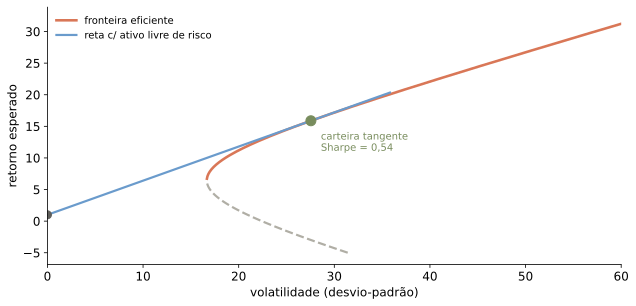
Carteira tangente aqui: Intel: 51,0%, Coca-Cola: 40,8%, Bore Industries: 8,2%.
As preferências determinam apenas quanto investir na carteira tangente versus no ativo livre de risco:
Um investidor com portfólio arriscado \(P\) considera tomar emprestado (vender o ativo livre de risco) para investir mais num ativo \(i\). Duas consequências:
Aumenta o índice de Sharpe de \(P\) se:
\[ Sharpe_{mg}=\frac{E\left[R_{i}\right]-r_{f}}{SD\left(R_{i}\right)\times Corr\left(R_{i},R_{P}\right)}>\frac{E\left[R_{P}\right]-r_{f}}{SD\left(R_{P}\right)}=Sharpe_{P} \]
Rearranjando:
\[ \underset{\text{retorno incremental}}{\underbrace{E\left[R_{i}\right]-r_{f}}}>\underset{\text{vol. incremental}}{\underbrace{SD\left(R_{i}\right)\times Corr\left(R_{i},R_{P}\right)}}\times Sharpe_{P} \]
\[ \beta_{i}^{P}\equiv\dfrac{SD\left(R_{i}\right)\times Corr\left(R_{i},R_{P}\right)}{SD\left(R_{P}\right)} \]
Adicionar \(i\) aumenta o Sharpe de \(P\) se e somente se:
\[ E\left[R_{i}\right] > r_{f}+\beta_{i}^{P}\left(E\left[R_{P}\right]-r_{f}\right) \]
O lado direito é o retorno exigido: o retorno necessário para compensar o risco que \(i\) acrescenta a \(P\).
Sem restrições à negociação: um portfólio é eficiente se e somente se o retorno esperado de cada título disponível é igual ao seu retorno exigido.
\[ E\left[R_{i}\right]=r_{i}\equiv r_{f}+\beta_{i}^{eff}\left(E\left[R_{eff}\right]-r_{f}\right) \]
Resultado: o prêmio de risco de qualquer investimento vem do seu beta em relação ao portfólio eficiente.
O portfólio eficiente (tangente) é o padrão que separa, em qualquer ativo, o risco sistemático do idiossincrático:
\[ SD(R_i)^2 = \underbrace{\left(\beta_i^{eff}\right)^2 SD(R_{eff})^2}_{\text{risco sistemático}} + \underbrace{\text{risco idiossincrático (diversificável)}}_{} \]
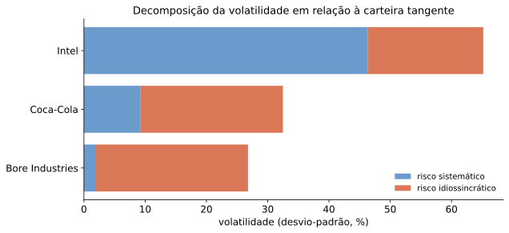
Só o risco correlacionado com o portfólio eficiente é precificado; o resto pode ser diversificado.
Portanto, a carteira tangente \(M\) é a carteira de mercado.
Seja \(C\) uma carteira na CML e \(x\) a fração aplicada no mercado \(M\):
\[ E\left[R_{C}\right]=r_{f}+x\left(E\left[R_{M}\right]-r_{f}\right)\qquad SD\left[R_{C}\right]=x\,SD\left[R_{M}\right] \]
Logo, para qualquer carteira eficiente:
\[ E\left[R_{C}\right]=r_{f}+\dfrac{SD\left[R_{C}\right]}{SD\left[R_{M}\right]}\left(E\left[R_{M}\right]-r_{f}\right) \]
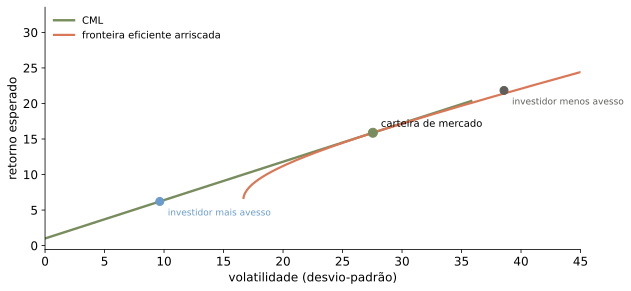
Dado um portfólio de mercado eficiente, o retorno esperado de qualquer investimento é:
\[ E\left[R_{i}\right]=r_{f}+\beta_{i}^{M}\left(E\left[R_{M}\right]-r_{f}\right) \]
O beta é definido como:
\[ \beta_{i}^{M}\equiv\beta_{i}=\dfrac{SD\left(R_{i}\right)\times Corr\left(R_{i},R_{M}\right)}{SD\left(R_{M}\right)}=\dfrac{Cov\left(R_{i},R_{M}\right)}{Var\left(R_{M}\right)} \]
Tratando a carteira tangente como carteira de mercado (\(r_f=\) 1,0\\\\%):
| Ação | Retorno esperado | Beta |
|---|---|---|
| Intel | 26,0% | 1,68 |
| Coca-Cola | 6,0% | 0,34 |
| Bore Industries | 2,0% | 0,07 |
Carteira de mercado: \(E[R_M] = 15,9\%\), \(SD(R_M) = 27,6\%\).
Sob as hipóteses do CAPM, todo ativo cai exatamente sobre a SML.
\[ \beta_{i}=1 \Rightarrow E[R_{i}]=E[R_{M}] \]
\[ \beta_{i}=0 \Rightarrow E[R_{i}]=r_{f} \]
\[ \beta_{i}<0 \Rightarrow E[R_{i}]<r_{f}\quad\text{(por quê?)} \]
O beta de um portfólio é a média ponderada dos betas dos títulos que o compõem:
\[ \beta_{P}=\dfrac{Cov\left(R_{P},R_{Mkt}\right)}{Var\left(R_{Mkt}\right)}=\sum_{i}x_{i}\dfrac{Cov\left(R_{i},R_{Mkt}\right)}{Var\left(R_{Mkt}\right)}=\sum_{i}x_{i}\beta_{i} \]
Novamente, a bilinearidade da covariância.
Para aprimorar o desempenho da carteira, comparamos o retorno esperado de cada título com seu retorno exigido pela SML.